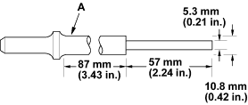
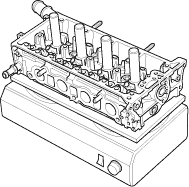
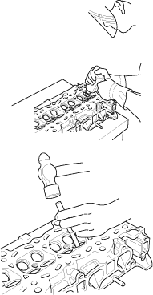

Special Tools Required
- Valve guide driver, 5.5 mm, 07742-0010100
- Valve guide reamer, 5.525 mm, 07HAH-PJ70100
- Inspect valve stem-to-guide clearance (see page 6-35).
- As illustrated below, use a commercially available air-impact valve guide driver (A) modified to fit the diameter of the valve guides. In most cases, the same procedure can be done using the special tool and a conventional hammer.

- Select the proper replacement guides and chill them in the freezer section of a refrigerator for about an hour.
- Use a hot plate or oven to evenly heat the cylinder head to 150°C (300°F). Monitor the temperature with a cooking thermometer. Do not get the head hotter than 150°C (300°F); excessive heat may loosen the valve seats.


- Working from the camshaft side, use the driver and an air hammer to drive the guide about 2 mm (0.1 in.) towards the combustion chamber. This will knock off some of the carbon and make removal easier. Hold the air hammer directly in line with the valve guide to prevent damaging the driver.
- Turn the head over and drive the guide out toward the camshaft side of the head.

- If a valve guide will not move, drill it out with a 8 mm (5/16 inch) bit, then try again. Drill guides only in extreme cases; you could damage the cylinder head if the guide breaks.
- Remove the new guide(s) from the freezer, one at a time, as you need them.